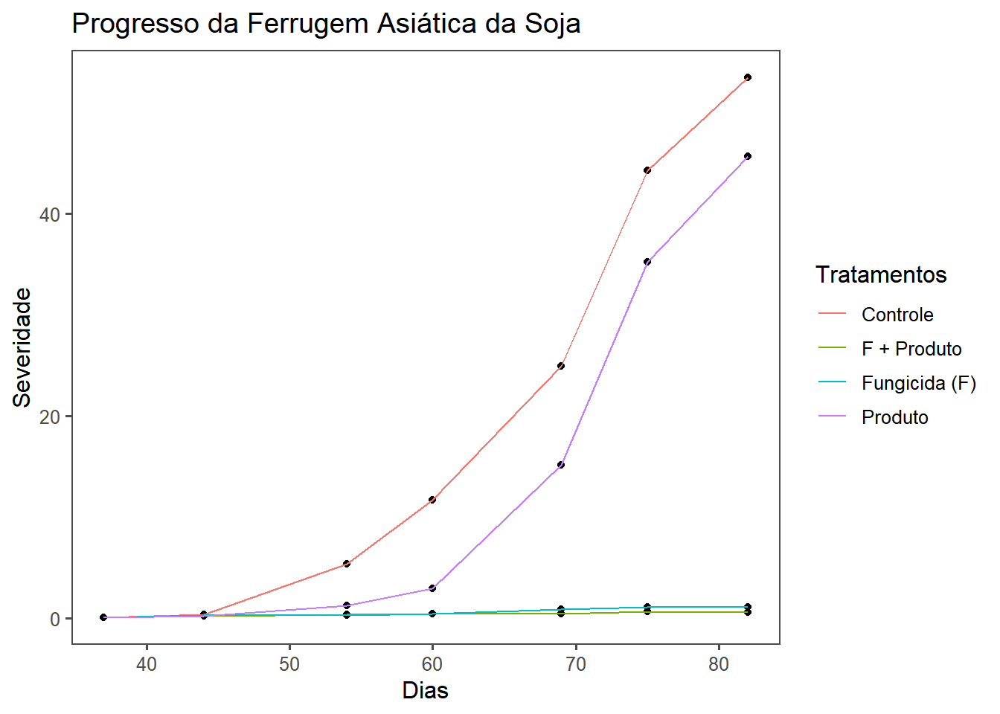
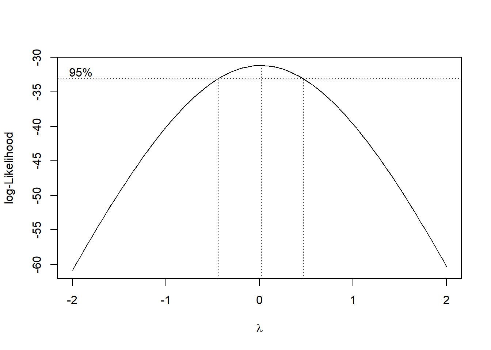

library(gsheet)
sev <- gsheet2tbl("https://docs.google.com/spreadsheets/d/1D_tSkv6calLSIxxzwG_qiMH3cBlG1Y0B/edit#gid=238991737")Importando os dados
Importação através da função gsheet2tbl do pacote gsheet.
Vizualização gráfica
library(tidyverse)
library(ggthemes)sev_med <- sev|>
group_by(Tratamentos, DAE) |>
summarise(Sev_media = mean(Sev), DAE = DAE)
sev_med |>
ggplot(aes(DAE, Sev_media, color = Tratamentos))+
geom_point(color = "black")+
geom_line()+
theme_few()+
labs(x = "Dias", y = "Severidade", title = "Progresso da Ferrugem asiática da Soja")
Área abaixo da cruva de progresso da doença (AACPD)
library(epifitter)
sev_curve <- sev |>
group_by(Tratamentos, Blocos) |>
summarise(AACPD = AUDPC(DAE, Sev))Análise estatística
Realizando a análise de variância (ANOVA) em para dados de experimentos delineados em blocos ao acaso (DBC)
aov_aacpd <- aov(AACPD ~ Tratamentos + Blocos, data = sev_curve)
anova(aov_aacpd)Analysis of Variance Table
Response: AACPD
Df Sum Sq Mean Sq F value Pr(>F)
Tratamentos 3 1790871 596957 136.228 5.588e-09 ***
Blocos 1 18944 18944 4.323 0.06178 .
Residuals 11 48203 4382
---
Signif. codes: 0 '***' 0.001 '**' 0.01 '*' 0.05 '.' 0.1 ' ' 1Checando as premissas:
shapiro.test(aov_aacpd$residuals)
Shapiro-Wilk normality test
data: aov_aacpd$residuals
W = 0.96068, p-value = 0.6741bartlett.test(AACPD ~ Tratamentos, data = sev_curve)
Bartlett test of homogeneity of variances
data: AACPD by Tratamentos
Bartlett's K-squared = 28.239, df = 3, p-value = 3.235e-06Pelo teste de Bartlett os dados não apresentam homogeneidade de variância. Vamos refazer os testes através das funções ‘check_normality’ e ‘check_heteroscedasticity’ do pacote performance que também pode ser utilizado.
library(performance)
check_normality(aov_aacpd)OK: residuals appear as normally distributed (p = 0.611).check_heteroscedasticity(aov_aacpd)Warning: Heteroscedasticity (non-constant error variance) detected (p = 0.032).Os resultados se mantêm, havendo necessidade de transformação dos dados.
Transformação por boxcox
library(MASS)
b <- boxcox(lm(sev_curve$AACPD+0.1 ~ 1))
lambda <- b$x[which.max(b$y)]
sev_curve$AACPD_2 <- (sev_curve$AACPD ^ lambda - 1) / lambdaANOVA com os dados transformados
aov_aacpd_2 <- aov(AACPD_2 ~ Tratamentos + Blocos, data = sev_curve)
anova(aov_aacpd_2)Analysis of Variance Table
Response: AACPD_2
Df Sum Sq Mean Sq F value Pr(>F)
Tratamentos 3 59.058 19.6858 324.447 5.174e-11 ***
Blocos 1 0.019 0.0193 0.318 0.5841
Residuals 11 0.667 0.0607
---
Signif. codes: 0 '***' 0.001 '**' 0.01 '*' 0.05 '.' 0.1 ' ' 1Checando as premissas novamente
Via testes:
shapiro.test(aov_aacpd_2$residuals)
Shapiro-Wilk normality test
data: aov_aacpd_2$residuals
W = 0.96036, p-value = 0.6683bartlett.test(AACPD_2 ~ Tratamentos, data = sev_curve)
Bartlett test of homogeneity of variances
data: AACPD_2 by Tratamentos
Bartlett's K-squared = 5.482, df = 3, p-value = 0.1397Via performance:
check_normality(aov_aacpd_2)OK: residuals appear as normally distributed (p = 0.497).check_heteroscedasticity(aov_aacpd_2)OK: Error variance appears to be homoscedastic (p = 0.081).Testes de comparação de médias
library(emmeans)
medias_sev <- emmeans(aov_aacpd_2, ~ Tratamentos)
medias_sev Tratamentos emmean SE df lower.CL upper.CL
Controle 7.13 0.123 11 6.86 7.40
F + Produto 2.90 0.123 11 2.63 3.17
Fungicida (F) 3.29 0.123 11 3.02 3.56
Produto 6.70 0.123 11 6.43 6.97
Confidence level used: 0.95 pwpm(medias_sev) Controle F + Produto Fungicida (F) Produto
Controle [7.13] <.0001 <.0001 0.1141
F + Produto 4.235 [2.90] 0.1656 <.0001
Fungicida (F) 3.841 -0.395 [3.29] <.0001
Produto 0.436 -3.799 -3.404 [6.70]
Row and column labels: Tratamentos
Upper triangle: P values adjust = "tukey"
Diagonal: [Estimates] (emmean)
Lower triangle: Comparisons (estimate) earlier vs. laterlibrary(multcomp)
cld(medias_sev, Letters = letters) Tratamentos emmean SE df lower.CL upper.CL .group
F + Produto 2.90 0.123 11 2.63 3.17 a
Fungicida (F) 3.29 0.123 11 3.02 3.56 a
Produto 6.70 0.123 11 6.43 6.97 b
Controle 7.13 0.123 11 6.86 7.40 b
Confidence level used: 0.95
P value adjustment: tukey method for comparing a family of 4 estimates
significance level used: alpha = 0.05
NOTE: If two or more means share the same grouping symbol,
then we cannot show them to be different.
But we also did not show them to be the same. Os tratamentos são agrupados em letras (‘a’ e ‘b’). Tratamentos que compartilham a mesma letra não são significativamente diferentes entre si.
F + Produto e Fungicida (F) estão no grupo ‘a’. Produto e Controle estão no grupo ‘b’.